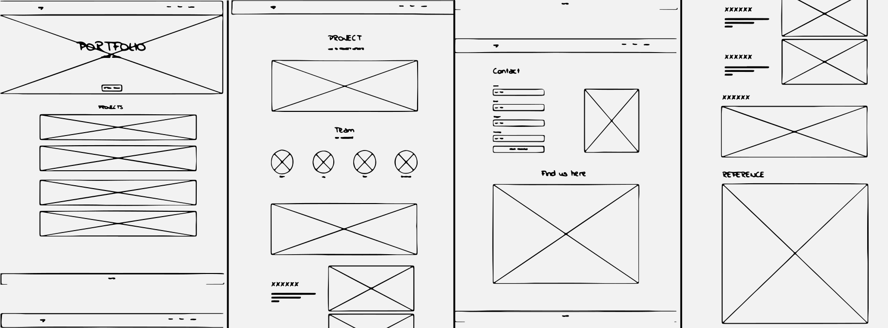

Portfolio Website Programming
Introduction
I developed my website through programming. I wrote and implemented code to design and functionally build my DAV portfolio site. This involved utilizing programming languages such as HTML, CSS, and JavaScript to create a responsive online experience. Before programming, I created wireframe drafts to plan the site's layout and structure. After completing the initial programming, I conducted user experience research to gather feedback and insights, guiding further refinements to enhance both the functionality and design of the website. This iterative process ensured that my portfolio effectively communicates my data-driven expertise.
Tools and Languages
Tools: Uizard, Visual Studio Code, Github
Foundational Web Languages.: html, css, javascript
Wireframe Designs
I started with creating a few wireframe draft plan how my portfolio website should look and work. These sketches helped me organize everything and made the later website building easier. They guided me in creating a user-friendly data science portfolio.

Process Highlights
Interactive Scroll Hint Feature
This interactive JavaScript element enhances the user experience by providing a simple bouncing visual cue for scrolling. As you scroll down the webpage, it appears, guiding your navigation. Scroll past 20 pixels from the top, and then the hint disappears; scroll back up, and it reappears, making the overall scrolling experience more user-friendly and intuitive.
Responsive Design Feature
With media queries, this website adapts its layout and appearance across different device sizes, ensuring a consistent user-friendly experience. For example, project titles on homepage are designed differently based on each device's unique features. On mobile devices, which may not support hover effects, therefore I choose a direct yellow text color and a smaller font size, eliminating the need for a unnecessary hover-based transition.

Final Website
My finalized DAV portfolio website is refined with its responsiveness across various devices, ensuring a seamless user experience. It includes dynamic animated elements that improve the overall user experience quality. Overall, the website is designed for personal use, providing easy navigation to showcase my data-driven expertise effectively. It is also a valuable programming experience for me to build my own website.